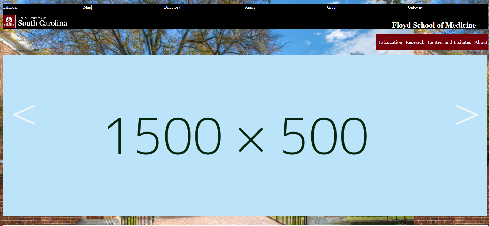
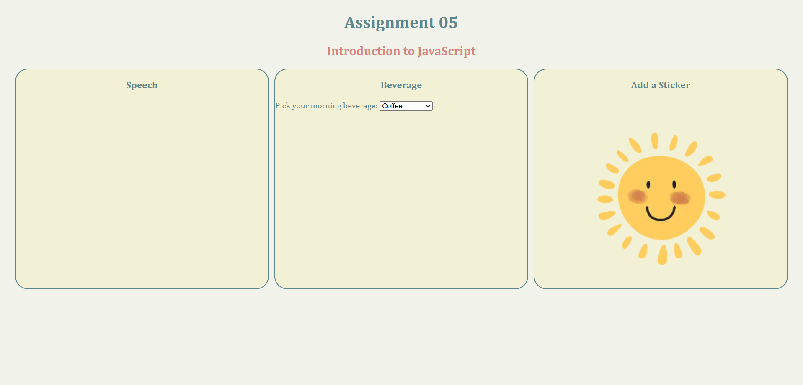
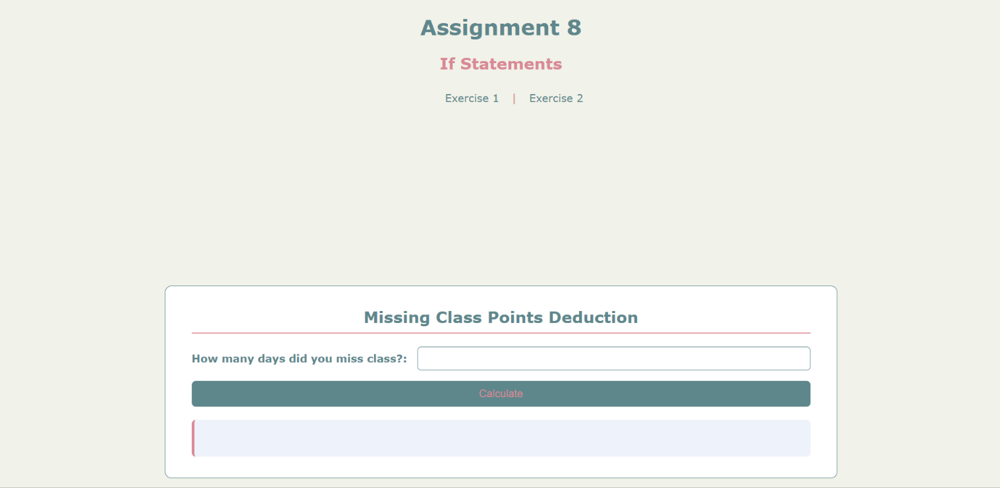

CSCE 242 is a introduction to webpage design and applications. "Web technologies to support client-server computing. Implementation of client-server applications." From UofSC
Repo Website-
First Assignment: HTML Introduction

This assignment is built off the html 5 elements. My website's topic is Giga Coasters.
-
Assignment 02: CSS Introduction

This assignmet showed off basic css style. I chose to use my sorority's recruitment process for his semester as my topic
-
Assignment 03: Page Layout

Learnign to use flex to make a home page layout.
-
Assignment 04:CSS and HTML Website Recreation

Using flex and CSS skills learned in class to recreate Floyd School Of Medicine Page.
-
Assignment 05: Introduction to JavaScript

Learning to use javascript along side html and css. These are all actions that occur when something gets clicked
-
Assignment 08: JavaScript If Statements

Learning if statements in javascript and using it to work with html and css